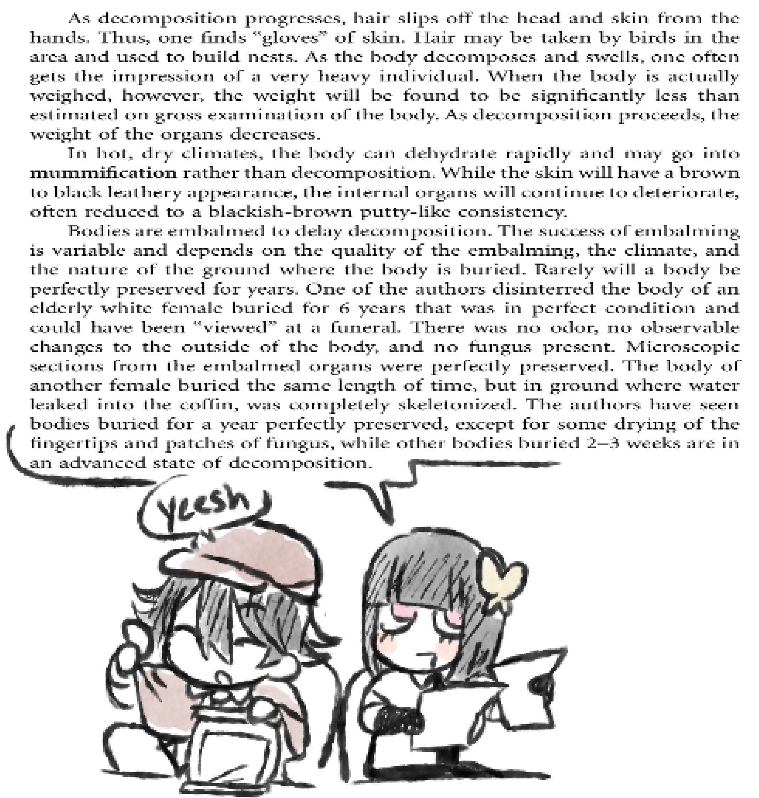

This page is a gathering of information on the human body that I have either found or already knew. Basically parts I'm interested in.
A person can survive up to about 3 days without drinking and up to about 2 to 3 weeks without eating.

As decomposition progresses, hair slips off the head and skin from the hands. Thus, one finds "gloves" of skin. Hair may be taken by birds in the area and used to build nests. As the body decomposes and swells, one often gets the impression of a very heavy individual. When the body is actually weighed, however, the weight will be found to be significantly less than estimated on gross examination of the body. As decomposition proceeds, the weight of the organs decreaces.
In hot, dry climates, the body can dehydrate rapidly and may go into mummification rather than decomposition. While the skin will have a brown to black leathery appearence, the internal organs will continue to deteriorate, often reduced to a blackish-brown putty-like consistency.
Bodies are embalmed to delay decomposition. The sucess of embalming is variable and depends on the quality of the embalming, the climate, and the nature of the ground where the body is buried. Rarely will a body be perfectly preserved for years. One of the authors disinterred the body of an elderly white female buried for 6 years that was in perfect condition and could have been "viewed" at a funeral. There was no odor, no observable changes to the outside of the body, and no fungus present. Microscopic sections from the embalmed organs were perfectly preserved. The body of another female buried the same length of time, but in ground where water leaked into the coffin, was completely skeletonized. The authors have seen bodies buried for a year perfectly preserved, except for some drying of the fingertips and patches of fungus, while other bodies buried 2-3 weeks are in an advanced state of decomposition.
Original text from Forensic Pathology, Second Edition
This Ghost and Pals song has a bunch of medical words I've never heard before or don't know the meaning of, so I took the opportunity to research and learn them all.
It is the procedure to remove a lobe of the lung. It can be done to remove tumers in early stages of lung cancer.
Source"characterized by, living in, or being a close physical association (as in mutualism or commensalism) between two or more dissimilar organisms"
SourceIt is a common condition where a person experiences a less then normal amount of blood flow which can quickly become dangerous. It can be a cause of heart attacks.
SourceThe technical term for the pins and needles or numb feeling when limbs are "asleep." But it can be an issue if the feeling doesn't go away. One example for why is carpal tunnel.
SourceIt used to be strictly a medical term, broadened to mean a prediction with knowledge beforehand. Personal interpretation; like using the knowledge you would have to predict what you will be diagnosed with.
SourceThe different distinct pieces of something that is broken apart.
Source one and source two